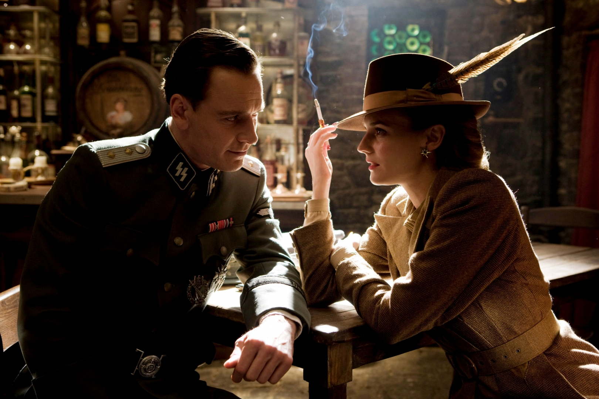
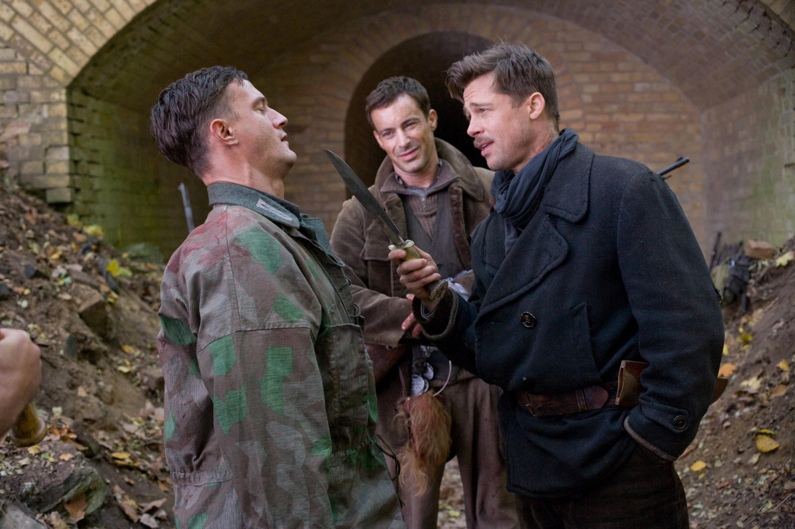

Бесславные ублюдки
«Бесславные ублюдки» (англ. Inglourious Basterds [sic], МФА: [ɪnˈɡlɔɹ.i.əs ˈbæstɝdz]) — фильм, снятый режиссёром Квентином Тарантино по собственному сценарию. Съёмки фильма начались осенью 2008 года во Франции и Германии, премьера состоялась на Каннском кинофестивале в 2009 году. Действие картины, в которой снялись Брэд Питт, Майк Майерс, Элай Рот и Кристоф Вальц, происходит во Франции во время Второй мировой войны. Фильм получил преимущественно положительные отзывы кинокритиков и собрал в мировом прокате более 322 млн долларов. Картина была выдвинута на восемь премий «Оскар» (победила всего в одной номинации — премия «за лучшую мужскую роль второго плана» досталась Кристофу Вальцу, который также получил «Золотой глобус» и BAFTA), четыре премии «Золотой глобус» и шесть премий BAFTA. Актёрская работа Кристофа Вальца, исполнившего роль штандартенфюрера СС Ганса Ланды, была высоко оценена ведущими киноаналитиками мира, многие из которых признавали её «жемчужиной» фильма и «секретным оружием Тарантино». Подводя киноитоги десятилетия, многие обозреватели включили «Бесславных ублюдков» в собственные списки лучших фильмов не только года, но и уходящих первых десяти лет XXI века. В оригинале фильм называется «Inglourious Bastеrds», хотя грамматически и орфографически правильно было бы написать «The Inglorious Bastards». В качестве заглавия для своей картины Квентин Тарантино взял американское прокатное название фильма Энцо Дж. Кастеллари «Этот проклятый бронепоезд», известного в США как «Бесславные ублюдки» — «The Inglorious Bastards», преднамеренно отказавшись от артикля и допустив две орфографические ошибки. Поэтому, чтобы передать замысел автора, стоит переводить название фильма также с ошибками. Например, кинокритик и киновед Андрей Плахов предлагал вариант названия «Безславные ублютки». На вопрос, почему он допустил орфографические ошибки в названии фильма, сам Тарантино отвечал: «Я никогда этого не стану объяснять». Но журналисты добились признания: «Почему „ублютки“? Да просто потому, что оно так произносится: „ублютки“».

«Охотник за евреями» штандартенфюрер СД Ганс Ланда наносит неожиданный визит в дом французского фермера Перье Лападитта в поисках членов еврейской семьи Дрейфусов. После долгого допроса Перье Лападитт вынужден признаться, что прячет их у себя. По приказу Ганса Ланды солдаты расстреливают прячущихся под полом людей, однако 18-летней Шошанне Дрейфус удаётся бежать. Ланда берёт её на мушку, но в итоге не стреляет. Параллельно лейтенант Альдо Рейн собирает группу американских солдат еврейского происхождения для выполнения миссии террора на территории оккупированной Франции. Задача группы: убивать нацистов самым жестоким образом с целью мести, деморализации и устрашения немецкой армии. Слухи об отряде быстро распространяются в Рейхе, и отряд получает прозвище «ублюдки». Командиру дают прозвище Альдо «Апач» за то, что он сам и его солдаты снимают со своих жертв скальпы. Рассказ о члене отряда Донни Донновице по кличке «Жид-Медведь» доходит до самого Гитлера, чем вызывает его исступлённый гнев. Другой участник группы — сержант (унтер-фельдфебель) Хуго Штиглиц — убил 13 офицеров гестапо, потому получил громкую славу среди эсэсовцев. К Гитлеру приводят солдата, который был в плену у «ублюдков». Они убили его сержанта и рядового сослуживца, но его самого не стали убивать, так как он выдал «ублюдкам» позицию немецкого патруля. Солдату вырезают на лбу свастику. Уцелевшая Шошанна сменила имя на Эммануэль Мимьё и стала владелицей кинотеатра, который якобы достался ей по наследству. На неё обращает внимание немецкий герой-снайпер Фредерик Цоллер, который в фильме «Гордость нации» о его подвиге, снятом под эгидой рейхсминистра пропаганды Германии Йозефа Геббельса, в главной роли сыграл самого себя.Цоллер, который сопровождает Геббельса, настойчиво уговаривает того перенести премьеру в кинотеатр «Le Gamaar», который принадлежит Эммануэль. На премьере соберётся всё высшее руководство Рейха, и даже сам Гитлер решает посетить важное пропагандистское мероприятие. Эммануэль вместе со своим киномехаником, чернокожим Марселем, в отместку за гибель своей семьи и страдания еврейского народа задумывают поджечь кинотеатр во время премьеры
О планах снять военный фильм Тарантино говорил ещё в начале 2000-х годов. Режиссёр потратил почти семь лет, чтобы написать сценарий к «Бесславным ублюдкам». Как признался Тарантино, он «дорожил каждой страницей сценария, из-за чего сюжет рос и расширялся». Кроме того, он чувствовал, что этот сценарий — лучший из им написанных. Тарантино охарактеризовал фильм так: «Это моя версия „Грязной дюжины“, „Пушек острова Наварон“ и „Куда не долетают и орлы“». В 2002 году Тарантино понял, что на создание фильма уйдёт больше времени, чем планировалось. К тому же его коллеги в то время как раз снимали фильмы о Второй мировой войне. В связи с этим Тарантино оставил задумку и перешёл к режиссированию дилогии «Убить Билла». После окончания съёмок «Убить Билла» режиссёр вернулся к сценарию «Ублюдков» и решил сделать не фильм, а мини-сериал. Он укоротил сценарий, руководствуясь длиной сценария «Криминального чтива». Тогда же он заявил о том, что съёмки фильма начнутся в 2005 году. Предполагаемым сюжетом фильма должны были стать побег отряда солдат перед казнью и их помощь антигитлеровской коалиции. Тарантино описал солдат как «необычных героев Второй мировой войны». В ноябре 2004 года Тарантино снова изменил свои планы и решил отложить производство «Бесславных ублюдков» ради того, чтобы сыграть в вестерне Такаси Миикэ «Сукияки Вестерн Джанго», а также снять фильм о кунг-фу на северокитайском языке. В 2007 году вместе с Робертом Родригесом Тарантино срежиссировал картину «Грайндхаус», после чего окончательно вернулся к работе над «Ублюдками». Сразу же после премьеры фильма сценарий картины был опубликован в качестве отдельной книги и переведён на несколько языков, в том числе и русский.
Фильм был положительно воспринят большинством кинокритиков и имеет среднюю оценку критиков в 88 % на агрегаторе Rotten Tomatoes. Ричард Корлисс из TIME одобрил решение Тарантино придумать для мировой войны новую концовку: «Все же знают, чем закончится дело. Плохие парни проиграют. Гитлер погиб в своём бункере. Где тут интрига? Где неопределённость? Для большинства фильмов о войне исторические факты — нечто неприкасаемое». Это мнение разделил Юрий Гладильщиков («Ведомости»): «Давайте наконец видоизменять историю в кино, как нам нравится… потому что в браке между кино и историей главная не история, главное — кино».